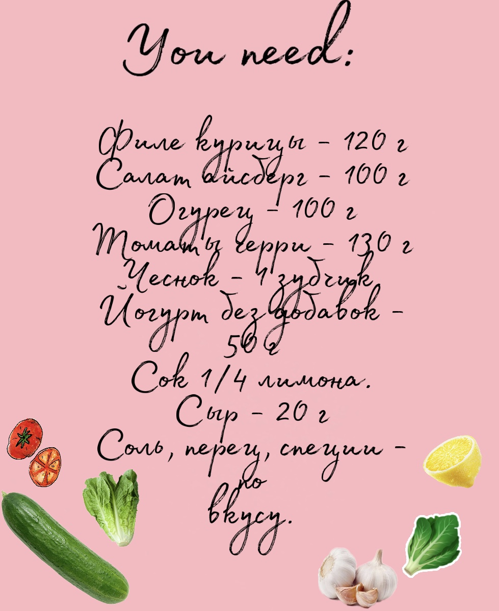
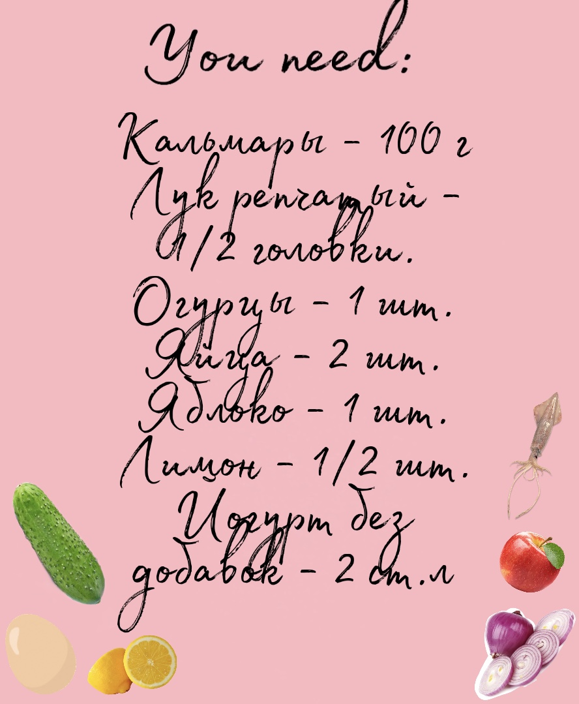

Быстрые рецепты

ПП Цезарь
- Филе натираем специями, чесноком и перцем и запекаем в фольге в разогретой до 200° духовке 40-45 минут.
- Готовое филе достаем, остужаем и нарезаем тонкими слайсами.
- Тонкими кружками нарезаем огурцы, разрезаем пополам помидоры, если у вас черри, или кубиками, если обычные.
- Для соуса смешиваем йогурт, лимонный сок, специи, измельченный чеснок
- Выкладываем на тарелку слой салата айсберг, затем половину соуса, сверху огурцы, филе, слой оставшегося соуса и помидоры.
- Сверху натираем сыр
Салат с кальмарами
- Режем кальмары на кольца или полоски и варим, согласно инструкции
- Варим яйца до полной готовности.
- Лук нарезаем тонкими кольцами, затем пополам. Огурцы нарезаем соломкой.
- Сваренные яйца нарезаем кубиками. Яблоки так же нарезаем кубиками и сбрызгиваем соком лимона.
- Смешиваем все ингредиенты, заправляем йогуртом. Сверху выкладываем кальмары. Можно добавить соль, перец по вкусу.
